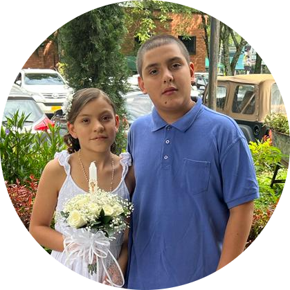

Juan Posada
Estudiante de desarrollo web.
Soy estudiante en una escuela de colombia, decidi hacer este curso ya que es una motivación personal empezar a desarrollar paginas web.
Educación
- Curso de cardio reanimación basica.
- Curso de ingles de mas de 1000 horas.
- Seis años de entrenamiento como portero de futbol.
- Curso de desarrollo web.
Mis Pasatiempos
- Jugar videojuegos
- Estudiar
- Compartir con mi familia y amigos
- Jugar futbol
- Hacer deporte
Experiencia En Deportes
| 2015-2022 |
Jugador y portero de fútbol |
mas sobre mis pasatiempos
¿Como Contactarme?
Formas de comunicarnos